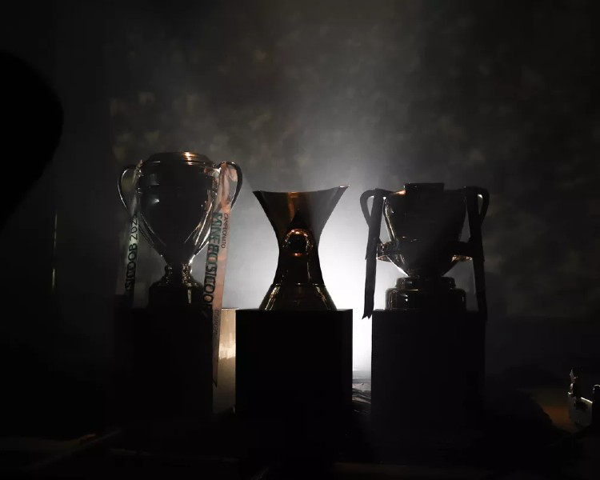

A conquista da América
Classificado para a Copa Libertadores de 2013,
a diretoria manteve a mesma base do ano anterior e
contratou alguns jogadores experientes como Gilberto Silva,
além de promover a volta do grande ídolo Diego Tardelli.
O time teve um excelente desempenho em campo terminando
a primeira fase como o melhor time do torneio.
Nas quartas-de-finais o Atlético eliminou o São Paulo FC com
um placar agregado de 6x2. Depois do grande duelo contra
os paulistas o time mineiro eliminou o Club Tijuana
e o Newell's com bastante sofrimento.
Na finalíssima contra o Club Olimpia do Paraguai o Atlético
conseguiu o título ao vencer os rivais nos pênaltis.
A alegria só não foi maior porque a equipe não teve a mesma
atuação na Copa do Mundo da FIFA no Marrocos no fim daquele
ano quando teve que se conformar apenas com o 3º lugar.
Recopa Sul-americana e Copa do Brasil
Veio 2014 e o Atlético ratificou sua posição
de campeão sul-americano, conquistando a Recopa Sul-Americana
contra o CA Lanús, campeão da Copa Sul-Americana no ano anterior.
Ainda em 2014, o clube finalmente pagaria uma “dívida” com
sua história na Copa do Brasil.
Disputada desde 1989, o Atlético é o recordista de
participações, com 23 presenças;[113] é o quarto time
com mais partidas disputadas, 140;
é o quinto com maior número de vitórias,
72; é o terceiro time que mais marcou gols,
290; além de manter a maior goleada da competição,
11x0 contra o Caiçara na edição de 91.
Mesmo com tantas estatísticas favoráveis,
o clube jamais havia conquistado o título de campeão.
Porém, a história mudou na competição de 2014;
numa campanha emocionante o time eliminou Palmeiras, Corinthians e
Flamengo, e na grande final venceu seu clássico rival para ficar com a taça.
Triplete Alvinegro
No campeonato brasileiro o Atlético começou com um revés diante
do Fortaleza, perdendo por 2-1, e isso causou certa apreensão na
torcida, porém o clube iria se recuperar de forma primorosa com
uma sequencia de vitórias, assumindo a liderança na 15° rodada
ao vencer o Juventude no Rio Grande do Sul de virada por 2-1.
A partir daquela partida, o alvinegro não saiu mais da liderança,
abrindo grande margem sobre os adversários diretos.
O Atlético não se abateu com a eliminação na competição continental
e continuou focado na busca da conquista do Brasileirão e encerrar o
jejum de 50 anos sem conquistar esse título. O time também jogava
a Copa do Brasil, competição no qual enfrentou Remo, Bahia,
Fluminense, Fortaleza e Athletico Paranaense
Pela 32ª rodada do Campeonato Brasileiro, o Galo enfrentou o Bahia,
precisando de uma vitória para ser o campeão antecipado.
O Galo enfrentou um jogo complicado, com o Bahia marcando dois gols
em quatro minutos. O Galo, por sua vez, não se abateu pelo placar
e conseguiu uma virada histórica de 3-2, com um gol de pênalti de
Hulk, e dois gols de Keno, em cinco minutos. Com isso,
o Clube Atlético Mineiro conquistava o Bicampeonato da Competição,
de forma antecipada, após 50 anos de espera. Ao fim da competição o Galo
terminou com 84 pontos, sendo essa a segunda melhor campanha da
história dos pontos corridos.
Ainda restava uma decisão pela frente, a Copa do Brasil,
na qual o Atlético buscava o bicampeonato diante do Athletico Paranaense.
O Galo massacrou o adversário no primeiro jogo em Belo Horizonte,
vencendo por 4 a 0 e conquistando uma ampla vantagem para o jogo
decisivo no dia 15 de Dezembro. No segundo jogo em Curitiba o Galo
voltou a vencer o adversário por 2 a 1 e se sagrou bicampeão da
Copa do Brasil, conquistando assim na temporada a Tríplice Coroa Nacional,
da qual o Atlético optou por nomear o feito como Triplete Alvinegro
